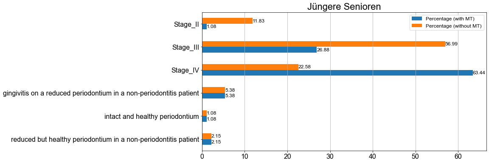

Summary
Contents
Summary¶
%matplotlib inline
# Load the "autoreload" extension
%load_ext autoreload
# always reload modules
%autoreload 2
# black formatter for jupyter notebooks
#%load_ext nb_black
# black formatter f|or jupyter lab
%load_ext lab_black
%run ../src/notebook_env.py
---------------------------------
Working on the host: Joachims-MacBook-Pro.local
---------------------------------
Python version: 3.9.7 (default, Sep 16 2021, 08:50:36)
[Clang 10.0.0 ]
---------------------------------
Python interpreter: /opt/miniconda3/envs/idz-parostatus/bin/python
---------------------------------
Root (ROOT) directory is set to /Users/jokr/Documents/Projekte_Extern/IDZ/DMS-V-ParoStatus
---------------------------------
data (DATA) directory is set to /Users/jokr/Documents/Projekte_Extern/IDZ/DMS-V-ParoStatus/data
---------------------------------
Attaching the following source folders:
/Users/jokr/Documents/Projekte_Extern/IDZ/DMS-V-ParoStatus/src
Import modules
import numpy as np
import pandas as pd
import matplotlib.pyplot as plt
from util import simple_table, complex_table
Load cohort dataset¶
fp = DATA.joinpath("processed")
fn = "dmsV_periodontitis_cases_staged_extent.parquet"
file = fp.joinpath(fn)
assert file.exists()
data_paro = pd.read_parquet(file)
fn = "dmsV_non_periodontitis_patients.parquet"
file = fp.joinpath(fn)
assert file.exists()
data_nonparo = pd.read_parquet(file)
data = pd.concat([data_paro, data_nonparo])
data.shape
(980, 70)
assert data.staging_with_MT.isnull().sum() == data.staging_without_MT.isnull().sum()
cond = data.staging_with_MT.isnull()
data.loc[cond, "staging_with_MT"] = data.loc[cond, "classification"]
cond = data.staging_without_MT.isnull()
data.loc[cond, "staging_without_MT"] = data.loc[cond, "classification"]
assert (
data.staging_with_MT.isnull().sum() == data.staging_without_MT.isnull().sum() == 0
)
Staging with MT¶
ax = data["staging_with_MT"].value_counts().sort_index().plot.barh()
for container in ax.containers:
ax.bar_label(container, size=15)
ax.grid(axis="x")
ax.set_ylabel("")
ax.set_title("Staging with MT", size=22)
print(data["staging_with_MT"].notnull().sum())
980
ax = data.groupby("staging_with_MT")["extent"].value_counts().sort_index().plot.barh()
for container in ax.containers:
ax.bar_label(container, size=15)
ax.grid(axis="x")
ax.set_ylabel("")
ax.set_title("Staging with extent with MT", size=22)
print(data["staging_with_MT"].notnull().sum())
980
Staging without MT¶
ax = data["staging_without_MT"].value_counts().sort_index().plot.barh()
for container in ax.containers:
ax.bar_label(container, size=15)
ax.grid(axis="x")
ax.set_ylabel("")
ax.set_title("Staging without MT", size=22)
print(data["staging_without_MT"].notnull().sum())
980
ax = (
data.groupby("staging_without_MT")["extent"].value_counts().sort_index().plot.barh()
)
for container in ax.containers:
ax.bar_label(container, size=15)
ax.grid(axis="x")
ax.set_ylabel("")
ax.set_title("Staging without extent with MT", size=22)
print(data["staging_without_MT"].notnull().sum())
980
Tabels for staging with and without MT¶
tab_with_MT = simple_table(df=data, col="staging_with_MT", digit=3)
tab_with_MT.columns = [
"Absolute (with MT)",
"Percentage (with MT)",
]
tab_without_MT = simple_table(df=data, col="staging_without_MT", digit=3)
tab_without_MT.columns = [
"Absolute (without MT)",
"Percentage (without MT)",
]
pd.concat(
[tab_with_MT, tab_without_MT],
axis=1,
)
| Absolute (with MT) | Percentage (with MT) | Absolute (without MT) | Percentage (without MT) | |
|---|---|---|---|---|
| Hyperplasia | 1.0 | 0.102 | 1.0 | 0.102 |
| Stage_I | 1.0 | 0.102 | 29.0 | 2.959 |
| Stage_II | 29.0 | 2.959 | 133.0 | 13.571 |
| Stage_III | 214.0 | 21.837 | 488.0 | 49.796 |
| Stage_IV | 644.0 | 65.714 | 238.0 | 24.286 |
| generalized gingivitis in an intact periodontium | 1.0 | 0.102 | 1.0 | 0.102 |
| gingivitis on a reduced periodontium in a non-periodontitis patient | 58.0 | 5.918 | 58.0 | 5.918 |
| intact and healthy periodontium | 7.0 | 0.714 | 7.0 | 0.714 |
| reduced but healthy periodontium in a non-periodontitis patient | 25.0 | 2.551 | 25.0 | 2.551 |
| Total | 980.0 | 99.999 | 980.0 | 99.999 |
data.loc[
data[["staging_without_MT", "extent"]].notnull().all(axis=1), "joined_without_MT"
] = data.loc[
data[["staging_without_MT", "extent"]].notnull().all(axis=1),
["staging_without_MT", "extent"],
].apply(
lambda x: " - ".join(x), axis=1
)
data.loc[
data[["staging_with_MT", "extent"]].notnull().all(axis=1), "joined_with_MT"
] = data.loc[
data[["staging_with_MT", "extent"]].notnull().all(axis=1),
["staging_with_MT", "extent"],
].apply(
lambda x: " - ".join(x), axis=1
)
tab_with_MT = simple_table(df=data, col="joined_with_MT", digit=3)
tab_with_MT.columns = [
"Absolute (with MT)",
"Percentage (with MT)",
]
tab_without_MT = simple_table(df=data, col="joined_without_MT", digit=3)
tab_without_MT.columns = [
"Absolute (without MT)",
"Percentage (without MT)",
]
pd.concat(
[tab_with_MT, tab_without_MT],
axis=1,
)
| Absolute (with MT) | Percentage (with MT) | Absolute (without MT) | Percentage (without MT) | |
|---|---|---|---|---|
| Stage_I - localized (<30%) | 1.0 | 0.113 | 29.0 | 3.266 |
| Stage_II - localized (<30%) | 29.0 | 3.266 | 133.0 | 14.977 |
| Stage_III - generalized (≥30%) | 66.0 | 7.432 | 259.0 | 29.167 |
| Stage_III - localized (<30%) | 148.0 | 16.667 | 229.0 | 25.788 |
| Stage_IV - generalized (≥30%) | 293.0 | 32.995 | 100.0 | 11.261 |
| Stage_IV - localized (<30%) | 351.0 | 39.527 | 138.0 | 15.541 |
| Total | 888.0 | 100.000 | 888.0 | 100.000 |
Staging with MT for age group¶
_ = (
pd.DataFrame(data.groupby("altgr")["staging_with_MT"].value_counts().sort_index())
.unstack()
.droplevel(level=0, axis=1)
)
_.columns.name = ""
ax = _.plot.bar(rot=0)
for container in ax.containers:
ax.bar_label(container, size=14)
ax.grid(axis="y")
ax.set_xlabel("")
ax.set_title("Staging with MT per age group", size=22)
fig = plt.gcf()
fig.set_size_inches(14, 7)
_ = (
pd.DataFrame(data.groupby("altgr")["joined_with_MT"].value_counts().sort_index())
.unstack()
.droplevel(level=0, axis=1)
)
_.columns.name = ""
ax = _.plot.bar(rot=0)
for container in ax.containers:
ax.bar_label(container, size=14)
ax.grid(axis="y")
ax.set_xlabel("")
ax.set_title("Staging and extent with MT per age group", size=22)
fig = plt.gcf()
fig.set_size_inches(14, 7)
Staging without MT for age group¶
_ = (
pd.DataFrame(
data.groupby("altgr")["staging_without_MT"].value_counts().sort_index()
)
.unstack()
.droplevel(level=0, axis=1)
)
_.columns.name = ""
ax = _.plot.bar(rot=0)
for container in ax.containers:
ax.bar_label(container, size=14)
ax.grid(axis="y")
ax.set_xlabel("")
ax.set_title("Staging without MT per age group", size=22)
fig = plt.gcf()
fig.set_size_inches(14, 7)
_ = (
pd.DataFrame(data.groupby("altgr")["joined_with_MT"].value_counts().sort_index())
.unstack()
.droplevel(level=0, axis=1)
)
_.columns.name = ""
ax = _.plot.bar(rot=0)
for container in ax.containers:
ax.bar_label(container, size=14)
ax.grid(axis="y")
ax.set_xlabel("")
ax.set_title("Staging and extent without MT per age group", size=22)
fig = plt.gcf()
fig.set_size_inches(14, 7)
Tabels for staging with and without MT for age group¶
complex_without_MT = complex_table(
data=data,
gb="altgr",
col="staging_without_MT",
col_name_extension=" (without MT)",
)
complex_with_MT = complex_table(
data=data,
gb="altgr",
col="staging_with_MT",
col_name_extension=" (with MT)",
)
table = pd.concat([complex_with_MT, complex_without_MT], axis=1)
table
| Absolute (with MT) | Percentage (with MT) | Absolute (without MT) | Percentage (without MT) | ||
|---|---|---|---|---|---|
| Age group | Stage | ||||
| Jüngere Erwachsene | Stage_I | 1.0 | 1.23 | 1 | 1.23 |
| Stage_II | 24.0 | 29.63 | 43 | 53.09 | |
| Stage_III | 52.0 | 64.20 | 36 | 44.44 | |
| Stage_IV | 4.0 | 4.94 | 1 | 1.23 | |
| Jüngere Senioren | Stage_II | 1.0 | 1.08 | 11 | 11.83 |
| Stage_III | 25.0 | 26.88 | 53 | 56.99 | |
| Stage_IV | 59.0 | 63.44 | 21 | 22.58 | |
| gingivitis on a reduced periodontium in a non-periodontitis patient | 5.0 | 5.38 | 5 | 5.38 | |
| intact and healthy periodontium | 1.0 | 1.08 | 1 | 1.08 | |
| reduced but healthy periodontium in a non-periodontitis patient | 2.0 | 2.15 | 2 | 2.15 | |
| Ältere Senioren | Hyperplasia | 1.0 | 0.12 | 1 | 0.12 |
| Stage_I | NaN | NaN | 28 | 3.47 | |
| Stage_II | 4.0 | 0.50 | 79 | 9.80 | |
| Stage_III | 137.0 | 17.00 | 399 | 49.50 | |
| Stage_IV | 581.0 | 72.08 | 216 | 26.80 | |
| generalized gingivitis in an intact periodontium | 1.0 | 0.12 | 1 | 0.12 | |
| gingivitis on a reduced periodontium in a non-periodontitis patient | 53.0 | 6.58 | 53 | 6.58 | |
| intact and healthy periodontium | 6.0 | 0.74 | 6 | 0.74 | |
| reduced but healthy periodontium in a non-periodontitis patient | 23.0 | 2.85 | 23 | 2.85 |
Ranges for absolute values w and w/o MT¶
groups = table.index.get_level_values(0).unique()
for group in groups:
ax = (
table.loc[group, ["Absolute (with MT)", "Absolute (without MT)"]]
.sort_index(ascending=False)
.plot.barh()
)
for container in ax.containers:
ax.bar_label(container, size=12)
ax.grid(axis="x")
ax.set_ylabel("")
ax.set_title(group, size=22)
Ranges for percentage values w and w/o MT¶
groups = table.index.get_level_values(0).unique()
for group in groups:
ax = (
table.loc[group, ["Percentage (with MT)", "Percentage (without MT)"]]
.sort_index(ascending=False)
.plot.barh()
)
for container in ax.containers:
ax.bar_label(container, size=12)
ax.grid(axis="x")
ax.set_ylabel("")
ax.set_title(group, size=22)
